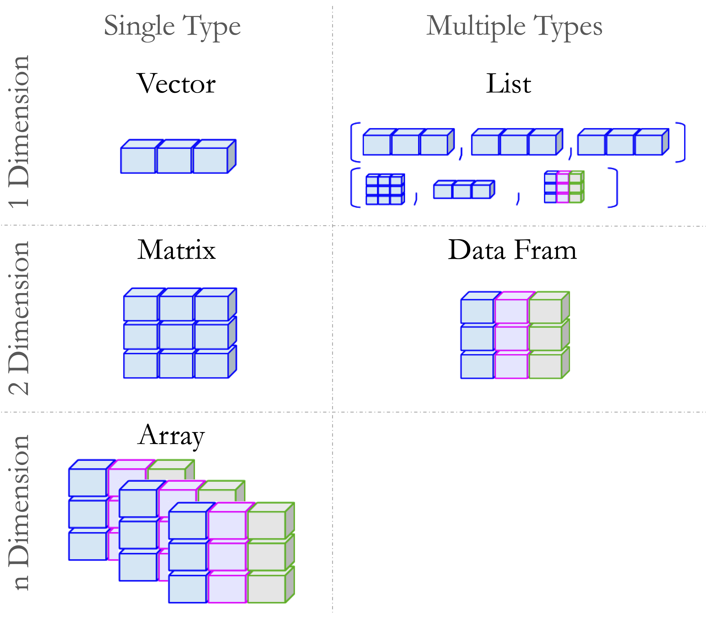
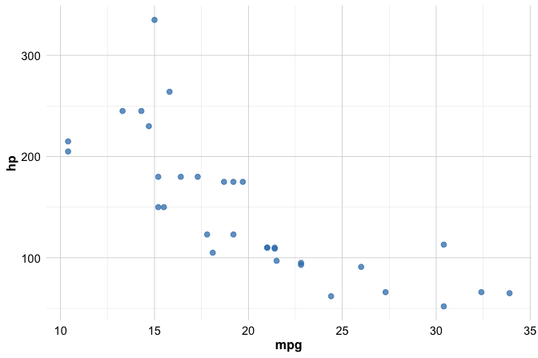
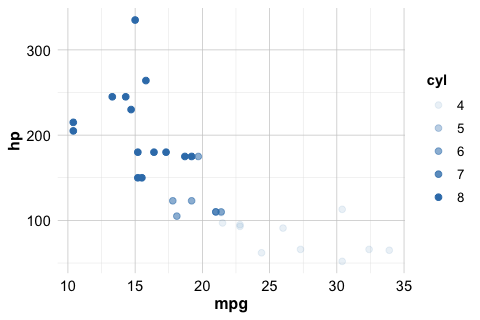
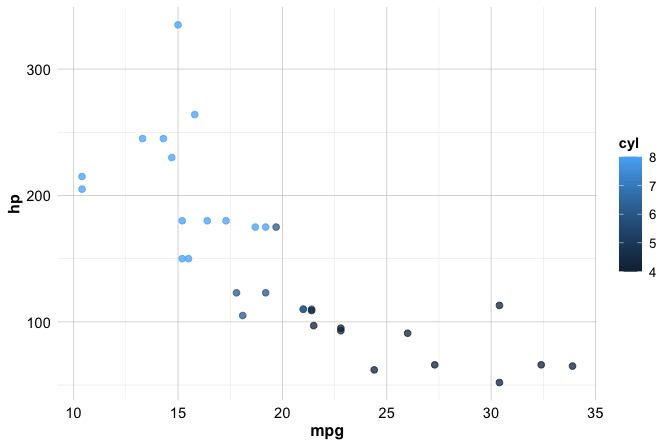
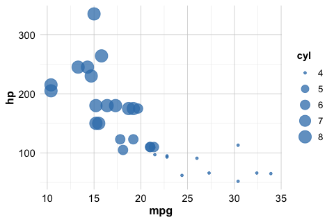
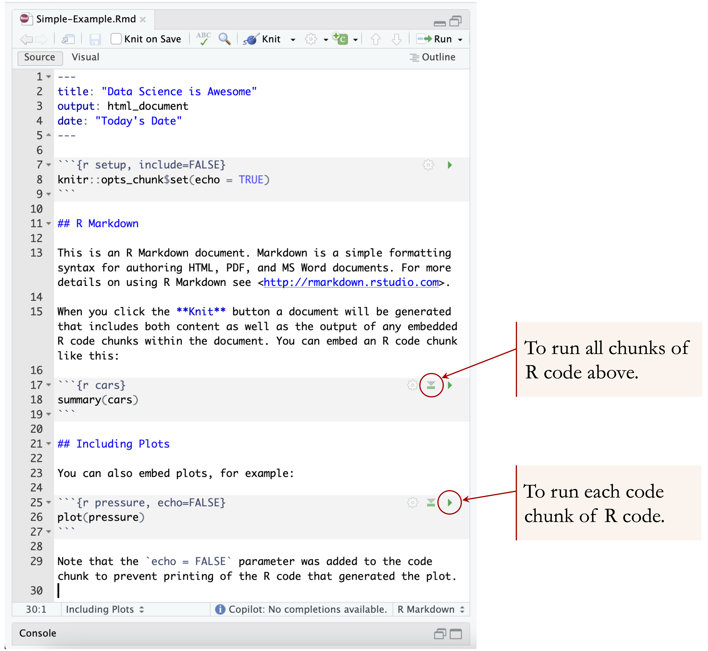
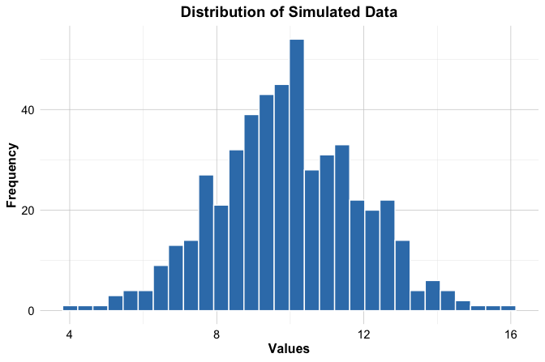

1 Getting Started with R
What do Spotify recommendations, fraud detection systems, and ChatGPT have in common? They all rely on data, and on programming languages to process, analyze, and act on it. In the world of data science, the two most widely used languages are R and Python. Both are widely adopted across academia, research, and industry, and each has distinct strengths.
This book is based on R, a language specifically designed for statistical computing and data analysis. By the end of this chapter, you will have installed R, explored its basic syntax, and loaded and visualized a real-world dataset with just a few lines of code. No prior experience with programming is required, only curiosity and a willingness to learn. If you are already familiar with R and comfortable using RStudio, you may wish to skim this chapter and proceed directly to Chapter 2, where we introduce the data science workflow and its core concepts.
R or Python? Students often ask whether they should choose R or Python. While Python is a general-purpose language widely used for application development and deep learning, R was designed specifically for data analysis. It excels in statistical modeling, data visualization, and reproducible reporting. In practice, many teams use both, selecting the most appropriate tool for each task. Learners with a background in Python often find it easier to pick up R, as the two languages share many foundational concepts. For those who prefer Python, a companion volume, Data Science Foundations and Machine Learning with Python: From Data to Decisions, is available from the same publisher.
To give a concrete example, imagine working with customer data to understand why users cancel their mobile service. With R, you can summarize call behavior, compare usage patterns across churned and retained customers, and create intuitive plots to reveal trends. For instance, you might find that customers who churn tend to spend more time on daytime calls, an insight that could inform proactive retention strategies. This kind of analysis is explored in greater detail in Chapter 4.
Throughout this book, we follow a structured framework known as the Data Science Workflow, which includes seven key steps: Problem Understanding, Data Preparation, Exploratory Data Analysis, Data Setup to Model, Modeling, Evaluation, and Deployment. Each chapter builds on this framework. The foundational skills introduced here, including navigating R, importing and manipulating data, and generating basic visualizations, will support your work at every stage. A detailed overview is provided in Chapter 2 (see Figure 2.3).
Why Choose R for Data Science?
R is widely used in statistics, data analysis, and visualization, owing to its rich ecosystem of packages tailored to data science tasks. Unlike general-purpose programming languages, it was designed specifically for statistical computing, making it especially well suited for both foundational and advanced analytical workflows. With concise, readable syntax, analysts and researchers can perform everything from descriptive statistics to machine learning.
Key strengths of R include statistical modeling, high-quality graphics, reproducible reporting, and domain-specific applications in fields such as epidemiology, psychology, and economics. As a free, open-source language with cross-platform support and an active global community, R offers thousands of user-contributed packages via the Comprehensive R Archive Network (CRAN) that extend its capabilities.
To support and streamline your coding experience, RStudio, an integrated development environment (IDE), provides an intuitive interface that includes a console, script editor, and tools for managing plots, packages, and version control.
What This Chapter Covers
This chapter is designed for beginners with no prior experience in coding. If you are new to R, programming, or data science, you are in the right place. Drawing on years of teaching experience, this chapter addresses the most common questions students raise during lectures and labs, particularly when working with real-world data for the first time.
You are not expected to master every detail on your first read. Feel free to skip ahead or revisit sections as needed. This chapter is meant to serve as a practical, flexible reference: one you can return to throughout the book for reminders about syntax, data structures, visualization basics, or how to import and explore data in R.
In this chapter, you will:
Set up your environment by installing R and RStudio;
Learn to navigate the RStudio interface and run your first commands;
Understand core data structures such as vectors, data frames, and lists;
Import datasets, install packages, and explore your data;
Create basic visualizations using the ggplot2 package;
Document your work with reproducible reports using R Markdown and Quarto.
By the end of this chapter, you will be able to load, explore, and visualize a real-world dataset with just a few lines of code, laying the foundation for your data science journey.
1.1 How to Learn R
Learning R opens the door to a wide range of powerful tools in data analysis, statistics, and machine learning. If you are new to programming, the learning curve may appear steep at first. However, consistent practice, thoughtful exploration, and the right resources make the journey both manageable and rewarding.
There is no single best way to learn R. Some learners benefit from structured textbooks, others from interactive exercises or video tutorials. A widely recommended resource is R for Data Science (2017), which emphasizes practical data workflows and readable code. For those entirely new to programming, Hands-On Programming with R (2014) offers an accessible entry point. Learners interested in machine learning might explore Machine Learning with R (2019). Interactive platforms like DataCamp and Coursera offer hands-on practice, while YouTube channels such as Data School provide visual explanations of core concepts. As you grow more confident, communities like Stack Overflow and the RStudio Community become invaluable for answering specific coding questions and learning from others.
Regardless of the path you take, the most effective strategy is regular, deliberate practice. Start with small tasks, explore how example code works, and gradually build toward your own projects. Mistakes are not only inevitable, they are an essential part of the learning process.
This mindset is well captured by James Clear’s concept of The Power of Tiny Gains, popularized in Atomic Habits: a 1% improvement each day may seem small, but it compounds into remarkable progress over time. Figure 1.1, created entirely in R, illustrates this idea, and previews what you will soon be able to do: write code that explores ideas, generates plots, and communicates insights clearly and reproducibly.
Learning R is not about mastering everything at once. It is about making steady progress, one concept at a time. With each small success (loading a dataset, creating a plot, writing a function), you are building skills that will support you throughout your data science journey. Be patient, stay curious, and trust the process. Growth in programming, as in data, is often exponential, just like the green line in Figure 1.1.
Now that you know what to expect and how to approach learning R, let us begin by setting up your environment. In the next section, you will install R and RStudio as your primary tools for writing and running R code.
1.2 How to Install R
Before you begin working with R, you need to install it on your computer. R is freely available from the Comprehensive R Archive Network (CRAN). Follow these steps:
Visit the CRAN website.
Choose your operating system, Windows, macOS, or Linux.
Download the appropriate installer and follow the on-screen instructions to complete the installation.
Once installed, you can use the R console directly. However, most users prefer to work within an integrated development environment (IDE). In the next section, we introduce RStudio, a popular and user-friendly interface for writing and running R code.
Keeping R Up to Date
R is updated regularly, with a major release each year, typically in April, and several smaller updates in between. Staying current ensures access to new features, performance improvements, and security patches. It also helps maintain compatibility with the latest packages. That said, frequent updates are not essential for beginners. If your current setup works for your learning and analysis tasks, you can continue using it without interruption.
When upgrading to a new major version, you may need to reinstall your R packages. To simplify this process, you can save a list of your installed packages using:
installed.packages()[, 1]Alternatively, use a package manager like pak or renv to snapshot and restore your setup. Although occasional updates may seem inconvenient, they help keep your tools stable and your workflow reliable in the long run.
1.3 How to Install RStudio
After installing the R software, it is helpful to use a dedicated set of tools that make working with R more productive and enjoyable. RStudio is a free and open-source integrated development environment (IDE) designed specifically for R. It provides a clean interface, a powerful script editor, and integrated tools for plotting, debugging, and package management, all of which streamline the R programming experience.
Note: RStudio is an editor and does not include R itself. You must install R before using RStudio.
Installing RStudio
To install RStudio:
Visit the RStudio website.
Download the latest version of RStudio Desktop (the free, open-source edition) for your operating system, Windows, macOS, or Linux.
Run the installer and follow the on-screen instructions.
Launch RStudio—you are now ready to begin coding in R.
RStudio is updated several times a year and typically notifies you when a new version is available. Keeping it up to date is recommended so that you can benefit from the latest features, stability improvements, and bug fixes.
Exploring the RStudio Interface
When you open RStudio for the first time, you will see a layout similar to Figure 1.2. This integrated interface is divided into four panels, each serving a specific purpose in your R workflow.

If only three panels are visible initially, select File > New File > R Script to open the script editor. This panel enables you to write, edit, and save R code for future use and reproducibility.
The four main panels are:
Script Editor (top left): Write and edit R scripts.
Console (bottom left): Enter R commands and view their output.
Environment and History (top right): Inspect current variables and view previously executed commands.
Files, Plots, Packages, and Help (bottom right): Navigate files, visualize data, manage packages, and access documentation.
For now, focus on entering simple R commands into the console and pressing Enter to view the results. In later chapters, you will gradually make use of each panel as your projects grow in complexity.
Customizing RStudio
As you begin working more extensively with R, it is worth taking a few moments to tailor RStudio to your preferences. A well-organized and comfortable environment can make your coding sessions more productive and enjoyable.
To customize RStudio, go to:
Tools > Global Options
From there, you can explore several settings to personalize your workspace. For example:
Under Appearance, you can change the editor theme (e.g., selecting Tomorrow Night 80 for dark mode) to reduce eye strain. You can also adjust font size, pane layout, and syntax highlighting to suit your style.
If installed, the Copilot tab allows you to enable GitHub Copilot for AI-assisted code suggestions.
These small adjustments not only improve comfort and focus but also support sustained engagement as you deepen your skills in R.
Now that your environment is set up, you might be wondering where to turn when you get stuck or want to deepen your understanding. The next section offers tips for getting help and continuing to learn.
1.4 Getting Help and Learning More
Learning R can be challenging at first; but you do not have to do it alone. Today’s learners have access to powerful support tools that can dramatically accelerate the process. Among them, AI assistants like ChatGPT offer a flexible, conversational way to learn faster, get unstuck, and deepen your understanding.
With an AI assistant, you can ask questions in natural language and receive immediate, context-aware guidance. Whether you are puzzled by an error message, unsure how a function works, or looking for help writing a block of code, tools like ChatGPT provide on-demand support. They can walk you through code step-by-step, generate examples based on your description, and explain unfamiliar concepts in clear, accessible language. This makes them especially helpful during independent study or when you need quick clarification without interrupting your workflow.
That said, AI tools are not the only resource. R includes robust built-in documentation, type ?function_name or use help() and example() in the console to access function-specific help and sample usage. These features offer precise, official information and remain a fundamental resource.
Online communities also play an important role. Sites such as Stack Overflow and RStudio Community provide answers to countless common problems. Searching these forums often reveals solutions or helpful patterns. If you post a new question, remember to include a clear explanation and a reproducible example.
In the end, the best way to learn R is to combine resources: practice regularly, use AI tools to speed up your learning, consult the documentation for accuracy, and turn to the community for collective wisdom. With each small step, you will become more confident in your ability to explore data, write code, and solve problems with R.
1.5 Data Science and Machine Learning with R
Imagine building a model that predicts hospital readmissions, optimizing a marketing campaign, or uncovering fraud in financial transactions. All of this is possible using code you understand and control. This book teaches you how, using R, one of the most powerful tools in the data scientist’s toolkit.
This book introduces the core ideas and practical tools of data science and machine learning, using R as the primary programming environment. You will learn how to prepare data, build models, evaluate results, and communicate insights. These skills are applied to real-world datasets throughout the book.
R provides a solid foundation for statistical analysis and data visualization. Its real strength, however, lies in its extensive ecosystem of packages (modular libraries that extend the capabilities of R for modern analytics). To support these capabilities, R relies on a vast network of user-contributed packages developed by a global community of researchers and practitioners. These packages are freely available via the Comprehensive R Archive Network (CRAN).
While base R includes essential functions for data wrangling and basic modeling, many advanced techniques, particularly in machine learning, are implemented through contributed packages. A typical R package contains functions for specific tasks, sample datasets for experimentation, and documentation or vignettes to guide users.
Each machine learning method introduced in this book is paired with an appropriate package implementation. For example, in Chapter 11, we use rpart and randomForest for decision trees and ensemble learning. In Chapter 12, we use neuralnet to introduce the basics of neural network modeling. These tools are introduced with clear examples and hands-on exercises to help you apply them confidently.
To support the examples and exercises in this book, we developed the liver package. It includes real-world datasets and utility functions specifically designed for teaching data science with R. Several of these datasets are listed in Table 1. For example, in Chapter 7, we use one of these datasets to demonstrate the k-nearest neighbors (kNN) classification algorithm using functions from liver.
For those interested in going further, CRAN hosts thousands of additional packages covering areas such as text mining, forecasting, deep learning, and geospatial analysis. You can browse the full repository at https://CRAN.R-project.org.
As you progress through this book, you will become not only proficient in the R language but also fluent in using its rich ecosystem of packages to tackle real data science challenges. With curiosity and consistent practice, these tools will become part of your everyday workflow.
1.6 How to Install R Packages
Packages are central to working in R, they extend its core capabilities and allow you to perform specialized tasks such as data wrangling, modeling, and visualization. Many examples in this book use contributed packages. You will be prompted to install them as needed, starting with the liver package described below.
There are two common ways to install R packages: through RStudio’s graphical interface or by using the install.packages() function in the R console.
To install a package using RStudio’s interface:
Click on the Tools menu and select Install Packages….
In the dialog box, enter the name of the package (or multiple packages separated by commas).
Make sure the Install dependencies option is checked.
Click Install to begin.
See the screenshot in Figure 1.3 for a visual reference.
The second, and more flexible, method is to install packages directly using the install.packages() function in the console. For example, to install the liver package, which provides datasets and functions used throughout this book, type:
install.packages("liver")Press Enter to execute the command. R will download the package from CRAN and install it on your system. The first time you install a package, you may be prompted to select a CRAN mirror. Choose one geographically close to your location for faster downloads.
If installation fails, check your internet connection or confirm that a firewall is not blocking access to CRAN. The install.packages() function can also be used to install packages from a local file or a custom repository. To learn more, run:
?install.packagesPackages only need to be installed once. However, each time you open a new R session, you must load the package using the library() function. This will be explained in the next section.
1.7 How to Load R Packages
Once a package is installed, you need to load it into your R session before you can use its functions and datasets. R does not automatically load all installed packages; instead, it loads only those you explicitly request. This helps keep your environment organized and efficient, avoiding unnecessary memory use and potential conflicts between packages.
To load a package, use the library() function. For example, to load the liver package, enter:
Press Enter to execute the command. If you see an error such as "there is no package called 'liver'", the package has not yet been installed. In that case, return to Section 1.6 to review how to install packages using either RStudio or the install.packages() function.
While installing a package makes it available on your system, loading it with library() is necessary each time you start a new R session. Only then will its functions and datasets be accessible in your workspace.
As you progress through this book, you will use several other packages, such as ggplot2 for visualization and randomForest for modeling, each introduced when needed. Occasionally, two or more packages may contain functions with the same name. When this occurs, R uses the version from the package most recently loaded.
To avoid ambiguity in such cases, use the :: operator to explicitly call a function from a specific package. For example, to use the partition() function from the liver package (used for splitting data into training and test sets), type:
liver::partition()This approach helps ensure that your code remains clear and reproducible, especially in larger projects where many packages are used together.
1.8 Running Your First R Code
One of the most empowering aspects of R is that it responds instantly to your commands. This immediate feedback makes it ideal for experimentation, learning, and developing intuition through trial and error. Suppose you just made three online purchases and want to calculate the total cost. In R, you can do that instantly:
49.23 + 11.78 + 38.99
[1] 100Press Enter, and R returns the result. You can also try subtraction, multiplication, or division. Feel free to change the numbers and experiment with different operations.
You can store the result in a variable for later use:
total <- 49.23 + 11.78 + 38.99The <- symbol is R’s assignment operator: it stores the value on the right under the name on the left. You can think of it as labeling a box and placing something inside. While the = operator (total = ...) also works, <- is the preferred convention, especially inside function calls.
Although <- is the traditional assignment operator, it is interchangeable with = in most situations. To keep the examples in this book beginner-friendly and consistent with other programming languages like Python, we will generally use = when assigning values. Both styles are valid, and you may choose the one that suits you best.
Once a value is stored, you can reuse it in future calculations. For example, to add 21% tax:
total * 1.21
[1] 121R retrieves the value of total and performs the calculation. Note that R is case-sensitive. This means Total and total refer to different objects. Always pay attention to capitalization when naming or calling variables and functions.
Try it yourself: What is the standard sales tax or VAT rate in your country? Replace
1.21with your local multiplier (e.g.,1.07for 7% tax) and rerun the code. You could also assign the rate to a variable liketax_rate <- 1.21to make your code more readable.
As you begin writing more lines of code, it becomes helpful to add comments that explain what each part is doing.
Using Comments to Explain Your Code
Comments help explain what your code is doing, making it easier to understand and maintain. In R, comments begin with a # symbol. Everything after # on the same line is ignored when the code runs.
Comments do not affect code execution but are essential for documenting your reasoning, whether for teammates, future readers, or even yourself after a few weeks. This is especially helpful in data science projects, where analyses often involve multiple steps and assumptions.
Here is an example with multiple steps and explanatory comments:
# Define prices of three items
prices <- c(49.23, 11.78, 38.99)
# Calculate the total cost
total <- sum(prices)
# Apply a 21% tax
total * 1.21
[1] 121Clear comments turn code into a readable narrative, which helps others (and your future self) understand the logic behind your analysis.
How Functions Work in R
Functions are at the heart of R. They allow you to perform powerful operations with just a line or two of code, whether you are calculating a summary statistic, transforming a dataset, or creating a plot. Learning how to use functions effectively is one of the most important skills in your R journey.
A function typically takes one or more arguments (inputs), performs a task, and returns an output. For example, the c() function (short for “combine”) creates a vector:
# Define prices of three items
prices <- c(49.23, 11.78, 38.99)Once you have a vector, you can use another function to compute a summary, such as the average:
mean(prices) # Calculate the mean of prices
[1] 33.33333The general structure of a function call in R looks like this:
function_name(argument1, argument2, ...)Some functions require specific arguments, while others have optional parameters with default values. To learn more about a function and its arguments, type ? followed by the function name:
?mean # or help(mean)This opens the help documentation, including a description, argument list, and example usage.
You will encounter many functions throughout this book, from basic operations like sum() and plot() to specialized tools for machine learning. Functions make your code concise, modular, and expressive.
Throughout this book, you will use many built-in functions, often combining them to perform complex tasks in just a few lines of code. For now, focus on understanding how functions are structured and practicing with common examples.
1.9 Import Data into R
Before you can explore, model, or visualize anything in R, you first need to bring data into your session. Importing data is the starting point for any analysis, and R supports a wide range of formats, including text files, Excel spreadsheets, and datasets hosted on the web. Depending on your needs and the file type, you can choose from several efficient methods to load your data.
Importing Data with RStudio’s Graphical Interface
For beginners, the easiest way to import data into R is through RStudio’s graphical interface. In the top-right Environment panel, click the Import Dataset button (see Figure 1.4). A dialog box will appear, prompting you to choose the type of file you want to load.
You can choose from several file types depending on your data source and analysis goals. For example, text files such as CSV or tab-delimited files can be loaded using the From Text (base) option. Microsoft Excel files can be imported via the From Excel option, provided the readxl package is installed. Additional formats may appear depending on your installed packages and RStudio setup.

After selecting a file, RStudio displays a preview window (Figure 1.5) where you can review and adjust options like column names, separators, data types, and encoding. Once you confirm the settings, click Import. The dataset will be loaded into your environment and appear in the Environment panel, ready for analysis.
Importing CSV Files with read.csv()
If you prefer writing code, or want to make your analysis reproducible, you can load CSV files using the read.csv() function from base R. This is one of the most common ways to import data, especially for scripting or automating workflows.
To load a CSV file from your computer, use:
data <- read.csv("path/to/your/file.csv")Replace "path/to/your/file.csv" with the actual file path. If your file does not include column names in the first row, set header = FALSE:
data <- read.csv("your_file.csv", header = FALSE)If your dataset contains special characters, common in international datasets or files saved from Excel, add the fileEncoding argument to avoid import issues:
data <- read.csv("your_file.csv", fileEncoding = "UTF-8-BOM")This ensures that R correctly interprets non-English characters and symbols.
Setting the Working Directory
The working directory is the folder on your computer where R looks for files to read, and where it saves any output by default. When you import data, R will search this folder unless you give a full path to the file.
To find out your current working directory, use:
getwd()To change it in code:
setwd("~/Documents") # Adjust this path to match your systemYou can also change it through the RStudio menu:
Session > Set Working Directory > Choose Directory…
Setting the working directory properly can save time and reduce errors when loading or saving files. If you’re getting “file not found” errors, checking the working directory is a good first step.
Importing Data Using Dialogs and URLs
Sometimes you may not want to hard-code a file path or prefer to work with data hosted online. R offers flexible methods that make your workflow more portable and user-friendly.
To allow users to choose a file interactively, use the file.choose() function with read.csv(). This opens a file selection dialog box:
data <- read.csv(file = file.choose())This is particularly handy when sharing code across different systems, where file locations may vary.
You can also import data directly from a URL by passing it to read.csv():
data <- read.csv("https://example.com/data.csv")This method is ideal for accessing public datasets from governments, research institutions, or data repositories. It ensures your code stays reproducible and eliminates the need for manual downloads.
Whether you are automating tasks or collaborating across platforms, these import options make it easier to load data without setup friction.
Importing Excel Files with read_excel()
Excel is one of the most common formats for storing data in business, education, and research. To import .xlsx or .xls files into R, use the read_excel() function from the readxl package, a lightweight, user-friendly tool in the tidyverse ecosystem.
If you have not installed the package yet, follow the guidance in Section 1.6, or use this command:
install.packages("readxl")Then load the package and import your Excel file:
library(readxl)
data <- read_excel("path/to/your/file.xlsx")Replace "path/to/your/file.xlsx" with the actual file path.
Unlike read.csv(), read_excel() supports multiple sheets in a single workbook. To import a specific sheet, use the sheet argument:
data <- read_excel("path/to/your/file.xlsx", sheet = 2)This is especially useful when Excel files contain separate tables across different tabs. If your file includes merged cells, multi-row headers, or other formatting quirks, it is best to clean it in Excel first, or handle it programmatically in R after import.
Loading Data from R Packages
In addition to reading external files, R also provides access to datasets that come bundled with packages. These datasets are immediately usable and are ideal for practice, examples, and case studies.
In this book, we use the liver package, developed specifically for teaching purposes, which includes several real-world datasets. One of the main datasets is churn, which contains information on customer behavior in a telecommunications context. If you have not installed the package yet, follow the guidance in Section 1.6.
To load the dataset into your environment, run:
Once loaded, churn will appear in your Environment tab and can be used like any other data frame. This dataset, along with others listed in Table 1, will appear throughout the book in examples related to modeling, evaluation, and visualization. In Chapter 4, you will perform exploratory data analysis (EDA) on churn to uncover patterns and prepare it for modeling.
Try it yourself: After loading
churn, usehead(churn)orstr(churn)to explore its structure and variables.
Using datasets embedded in packages like liver ensures that your analysis is reproducible and portable across systems, since the data can be loaded consistently in any R session.
1.10 Why Data Types Matter in R
In R, every object (whether a number, string, or logical value) has a data type. These types play a critical role in how R stores, processes, and interprets data. Recognizing the correct type is essential for ensuring that computations behave as expected and that analyses yield valid results.
Here are the most common data types in R:
Numeric: Real numbers such as 3.14 or -5.67. Used for continuous values such as weight, temperature, or income; they support arithmetic operations.
Integer: Whole numbers like 1, 42, or -6. Integers are useful for counting, indexing rows, or representing categories with numeric codes.
Character: Text values such as "Data Science" or "Azizam". Character data is used for names, descriptions, labels, and other textual content.
Logical: Boolean values, TRUE or FALSE. Logical values are used for comparisons, filtering, and conditional statements.
Factor: Categorical variables with a defined set of levels (e.g., "Yes" and "No"). Factors are essential in modeling and grouped visualizations, where the variable should behave as a category rather than text.
To check the type of a variable, use the class() function:
class(prices)
[1] "numeric"This tells you the broad data type R assigns to the variable. To inspect how R stores it internally, use typeof(). To explore complex structures like data frames, use str():
typeof(prices)
[1] "double"
str(prices)
num [1:3] 49.2 11.8 39Why does this matter? Treating a numeric variable as character, or vice versa, can cause functions to return incorrect results or warnings. For example:
income <- c("42000", "28000", "60000") # Stored as character
mean(income) # This will return NA with a warning
[1] NAIn this case, R interprets income as text, not numbers. You can fix the issue by converting the character vector to numeric:
income <- as.numeric(income)
mean(income)
[1] 43333.33Later chapters, such as Exploratory Data Analysis (Chapter 4) and Statistical Inference (Chapter 5), will show you how to apply tools specific to each variable type, whether for summarizing values, visualizing distributions, or building models.
Try it yourself: Load the
churndataset from the liver package (see Section 1.9). Then usestr(churn)to inspect its structure. Which variables are numeric, character, or factors? Try usingclass()andtypeof()on a few columns to explore how R understands them.
1.11 Data Structures in R
In R, data structures define how information is organized, stored, and manipulated. Choosing the right structure is essential for effective analysis, whether you are summarizing data, creating visualizations, or building predictive models. For example, storing customer names and purchases calls for a different structure than tracking the results of a simulation.
Data structures are different from data types: data types describe what a value is (e.g., a number or a string), while data structures describe how values are arranged and grouped (e.g., in a table, matrix, or list).
The most commonly used structures in R include vectors, matrices, data frames, lists, and arrays. Each is suited to particular tasks and workflows. Figure 1.6 provides a visual overview of these core structures.

In this section, we explore how to create and work with the four most commonly used data structures in R: vectors, matrices, data frames, and lists, each illustrated with practical examples showing when and how to use them.
Vectors in R
A vector is the most fundamental data structure in R. It represents a one-dimensional sequence of elements, all of the same type; for example, all numbers, all text strings, or all logical values (TRUE or FALSE). Vectors form the foundation of many other R structures, including matrices and data frames.
You can create a vector using the c() function (short for combine), which concatenates individual elements into a single sequence:
# Create a numeric vector representing prices of three items
prices <- c(49.23, 11.78, 38.99)
# Print the vector
prices
[1] 49.23 11.78 38.99
# Check if `prices` is a vector
is.vector(prices)
[1] TRUE
# Get the number of elements in the vector
length(prices)
[1] 3In this example, prices is a numeric vector containing three elements. The is.vector() function checks whether the object is a vector, and length(prices) tells you how many elements it contains.
Note: All elements in a vector must be of the same type. If you mix types (for example, numbers and characters), R will coerce them to a common type, usually character, which can sometimes lead to unintended consequences.
Matrices in R
A matrix is a two-dimensional data structure in R where all elements must be of the same type (numeric, character, or logical). Matrices are commonly used in mathematics, statistics, and machine learning for operations involving rows and columns.
To create a matrix, use the matrix() function. Here is a simple example:
# Create a matrix with 2 rows and 3 columns, filled row by row
my_matrix <- matrix(c(1, 2, 3, 4, 5, 6), nrow = 2, ncol = 3, byrow = TRUE)
# Display the matrix
my_matrix
[,1] [,2] [,3]
[1,] 1 2 3
[2,] 4 5 6
# Check if it's a matrix
is.matrix(my_matrix)
[1] TRUE
# Check its dimensions (rows, columns)
dim(my_matrix)
[1] 2 3This creates a \(2 \times 3\) matrix filled row by row using the numbers 1 through 6. If you leave out the byrow = TRUE argument (or set it to FALSE), R fills the matrix column by column, which is the default behavior.
Matrices are useful in a wide range of numerical operations, such as matrix multiplication, linear transformations, or storing pairwise distances. They form the backbone of many machine learning algorithms and statistical models. Most core computations in neural networks, support vector machines, and linear regression rely on matrix operations behind the scenes.
You can access specific elements using row and column indices:
# Access the element in row 1, column 2
my_matrix[1, 2]
[1] 2This retrieves the value in the first row and second column. You can also label rows and columns using rownames() and colnames() for easier interpretation in analysis.
Try it yourself: Create a \(3 \times 3\) matrix with your own numbers. Can you retrieve the value in the third row and first column?
Data Frames in R
A data frame is one of the most important and commonly used data structures in R. It organizes data in a two-dimensional layout, rows and columns, where each column can store a different data type: numeric, character, logical, or factor. This flexibility makes data frames ideal for tabular data, similar to what you might encounter in a spreadsheet or database.
In this book, nearly all datasets, whether built-in or imported from external files, are stored and analyzed as data frames. Understanding how to work with data frames is essential for following the examples and building your own analyses.
You can create a data frame by combining vectors of equal length using the data.frame() function:
# Create vectors for student data
student_id <- c(101, 102, 103, 104)
name <- c("Emma", "Bob", "Alice", "Noah")
age <- c(20, 21, 19, 22)
grade <- c("A", "B", "A", "C")
# Combine vectors into a data frame
students_df <- data.frame(student_id, name, age, grade)
# Display the data frame
students_df
student_id name age grade
1 101 Emma 20 A
2 102 Bob 21 B
3 103 Alice 19 A
4 104 Noah 22 CThis creates a data frame named students_df with four columns. Each row represents a student, and each column holds a different type of information. To confirm the object’s structure, use:
class(students_df)
[1] "data.frame"
is.data.frame(students_df)
[1] TRUETo explore the contents of a data frame, try:
head(students_df) # View the first few rows
student_id name age grade
1 101 Emma 20 A
2 102 Bob 21 B
3 103 Alice 19 A
4 104 Noah 22 C
str(students_df) # View column types and structure
'data.frame': 4 obs. of 4 variables:
$ student_id: num 101 102 103 104
$ name : chr "Emma" "Bob" "Alice" "Noah"
$ age : num 20 21 19 22
$ grade : chr "A" "B" "A" "C"
summary(students_df) # Summary statistics by column
student_id name age grade
Min. :101.0 Length:4 Min. :19.00 Length:4
1st Qu.:101.8 Class :character 1st Qu.:19.75 Class :character
Median :102.5 Mode :character Median :20.50 Mode :character
Mean :102.5 Mean :20.50
3rd Qu.:103.2 3rd Qu.:21.25
Max. :104.0 Max. :22.00Accessing and Modifying Columns
You can extract a specific column from a data frame using the $ operator or square brackets:
# Access the 'age' column
students_df$age
[1] 20 21 19 22You can also use students_df[["age"]] or students_df[, "age"], try each one to see how they work.
To modify a column, for example, to add 1 to each age:
students_df$age <- students_df$age + 1You can also add a new column:
# Add a logical column based on age
students_df$is_adult <- students_df$age >= 21This creates a new column called is_adult with TRUE or FALSE values.
Data frames are especially useful in real-world analysis, where datasets often mix numerical and categorical variables. For example, in this book, we frequently use the churn dataset from the liver package:
library(liver) # Load the liver package
data(churn) # Load the churn dataset
# Explore the structure of the data
str(churn)
'data.frame': 5000 obs. of 20 variables:
$ state : Factor w/ 51 levels "AK","AL","AR",..: 17 36 32 36 37 2 20 25 19 50 ...
$ area.code : Factor w/ 3 levels "area_code_408",..: 2 2 2 1 2 3 3 2 1 2 ...
$ account.length: int 128 107 137 84 75 118 121 147 117 141 ...
$ voice.plan : Factor w/ 2 levels "yes","no": 1 1 2 2 2 2 1 2 2 1 ...
$ voice.messages: int 25 26 0 0 0 0 24 0 0 37 ...
$ intl.plan : Factor w/ 2 levels "yes","no": 2 2 2 1 1 1 2 1 2 1 ...
$ intl.mins : num 10 13.7 12.2 6.6 10.1 6.3 7.5 7.1 8.7 11.2 ...
$ intl.calls : int 3 3 5 7 3 6 7 6 4 5 ...
$ intl.charge : num 2.7 3.7 3.29 1.78 2.73 1.7 2.03 1.92 2.35 3.02 ...
$ day.mins : num 265 162 243 299 167 ...
$ day.calls : int 110 123 114 71 113 98 88 79 97 84 ...
$ day.charge : num 45.1 27.5 41.4 50.9 28.3 ...
$ eve.mins : num 197.4 195.5 121.2 61.9 148.3 ...
$ eve.calls : int 99 103 110 88 122 101 108 94 80 111 ...
$ eve.charge : num 16.78 16.62 10.3 5.26 12.61 ...
$ night.mins : num 245 254 163 197 187 ...
$ night.calls : int 91 103 104 89 121 118 118 96 90 97 ...
$ night.charge : num 11.01 11.45 7.32 8.86 8.41 ...
$ customer.calls: int 1 1 0 2 3 0 3 0 1 0 ...
$ churn : Factor w/ 2 levels "yes","no": 2 2 2 2 2 2 2 2 2 2 ...The str() function provides a concise overview of variable types and values, which is an important first step when working with a new dataset.
Try it yourself: Create a small data frame with three columns: one numeric, one character, and one logical. Then use
$to extract or modify individual columns, and try adding a new column using a logical condition.
Lists in R
A list is a flexible and powerful data structure in R that can store a collection of elements of different types and sizes. Unlike vectors, matrices, or data frames: which require uniform data types across elements or columns, a list can hold a mix of objects, such as numbers, text, logical values, vectors, matrices, data frames, or even other lists.
Lists are especially useful when you want to bundle multiple results together. For example, model outputs in R often return a list containing coefficients, residuals, summary statistics, and diagnostics within a single object.
To create a list, use the list() function:
# Create a list containing a vector, matrix, and data frame
my_list <- list(vector = prices, matrix = my_matrix, data_frame = students_df)
# Display the contents of the list
my_list
$vector
[1] 49.23 11.78 38.99
$matrix
[,1] [,2] [,3]
[1,] 1 2 3
[2,] 4 5 6
$data_frame
student_id name age grade is_adult
1 101 Emma 21 A TRUE
2 102 Bob 22 B TRUE
3 103 Alice 20 A FALSE
4 104 Noah 23 C TRUEThis list, my_list, includes three named components: a numeric vector (prices), a matrix (my_matrix), and a data frame (students_df). You can access individual components using the $ operator, numeric indexing, or double square brackets:
# Access the matrix
my_list$matrix
[,1] [,2] [,3]
[1,] 1 2 3
[2,] 4 5 6
# Or equivalently
my_list[[2]]
[,1] [,2] [,3]
[1,] 1 2 3
[2,] 4 5 6To inspect the structure of a list, use str():
str(my_list)
List of 3
$ vector : num [1:3] 49.2 11.8 39
$ matrix : num [1:2, 1:3] 1 4 2 5 3 6
$ data_frame:'data.frame': 4 obs. of 5 variables:
..$ student_id: num [1:4] 101 102 103 104
..$ name : chr [1:4] "Emma" "Bob" "Alice" "Noah"
..$ age : num [1:4] 21 22 20 23
..$ grade : chr [1:4] "A" "B" "A" "C"
..$ is_adult : logi [1:4] TRUE TRUE FALSE TRUEThis gives you a compact overview of each component’s type and contents, which is helpful for navigating large or nested lists.
Lists play an important role in R programming, especially in statistical modeling, simulations, and any task that involves returning or storing mixed results.
Try it yourself: Create a list that includes a character vector, a logical vector, and a small data frame. Try accessing each component using
$,[[ ]], and numeric indexing.
1.12 Accessing Columns and Rows in R
Once your data is loaded into R, you will often need to extract specific columns (variables) or rows (observations) for inspection, transformation, or visualization. Two common tools for this are the $ operator and the [] (bracket) operator.
Using the $ Operator
The $ operator provides a quick and readable way to access a single column from a data frame or a named element from a list. For example, to access the name column in the students_df data frame:
students_df$name
[1] "Emma" "Bob" "Alice" "Noah"This returns a vector containing the values in the name column.
You can also use $ with lists. For instance, if you have a list named my_list:
my_list$vector
[1] 49.23 11.78 38.99This retrieves the numeric vector stored in the vector element of the list.
Using the [] Operator
The square bracket operator [] is more flexible and powerful. For data frames, the general syntax is:
data[row, column]To extract the first three rows of students_df:
students_df[1:3, ]
student_id name age grade is_adult
1 101 Emma 21 A TRUE
2 102 Bob 22 B TRUE
3 103 Alice 20 A FALSETo select specific columns, such as name and grade:
students_df[, c("name", "grade")]
name grade
1 Emma A
2 Bob B
3 Alice A
4 Noah CTo extract a specific value, for example, the grade in the second row:
students_df[2, "grade"]
[1] "B"Unlike $, the bracket syntax allows you to use variable names programmatically and select multiple columns at once.
Note: The
[]operator also works with lists, but its behavior differs depending on whether you use single ([ ]) or double ([[ ]]) brackets. For now, focus on using it with data frames.
Try it yourself: Load the
churndataset from the liver package. Extract the first seven rows usingchurn[1:7, ]. Then, use subsetting to select only rows where thestateis"OH"and display thechurnstatus for those customers.
1.13 How to Merge Data in R
In real-world data analysis, information is often spread across multiple tables. Merging datasets allows you to combine related information: such as customer demographics and transaction histories, into a single structure for analysis. I have included this section early in the book because many of my students frequently ask how to combine data from different sources when working on their course projects. As soon as you begin working with real datasets, merging becomes a practical and essential skill, since the information you need rarely comes in a single file.
In R, the base function merge() provides a flexible way to join two data frames using one or more shared columns (known as keys):
merge(x = data_frame1, y = data_frame2, by = "column_name")Here, x and y are the data frames to be merged, and by specifies the column(s) they have in common. If you’re matching on multiple columns, you can pass a character vector to by.
Consider the following two example data frames:
df1 <- data.frame(id = c(1, 2, 3, 4),
name = c("Alice", "Bob", "David", "Eve"),
age = c(22, 28, 35, 20))
df2 <- data.frame(id = c(3, 4, 5, 6),
age = c(25, 30, 22, 28),
salary = c(50000, 60000, 70000, 80000),
job = c("analyst", "manager", "developer", "designer"))To perform an inner join (keeping only rows with matching id values in both data frames):
merged_df <- merge(x = df1, y = df2, by = "id")
merged_df
id name age.x age.y salary job
1 3 David 35 25 50000 analyst
2 4 Eve 20 30 60000 managerTo perform a left join (keeping all rows from df1 and merging matched data from df2), set all.x = TRUE:
merged_df_left <- merge(x = df1, y = df2, by = "id", all.x = TRUE)
merged_df_left
id name age.x age.y salary job
1 1 Alice 22 NA NA <NA>
2 2 Bob 28 NA NA <NA>
3 3 David 35 25 50000 analyst
4 4 Eve 20 30 60000 managerOther common options include:
all.y = TRUE: right join (keep all rows fromdf2);all = TRUE: full join (keep all rows from both data frames).
If a row in one data frame has no match in the other, R will insert NA values in the unmatched columns.
While merge() is a powerful and versatile function, later in the book we will introduce the dplyr package, which provides more concise alternatives like left_join() and full_join(), especially helpful when working in the tidyverse style.
Tip: Always check the number of rows before and after a merge. If you see unexpected
NAs or missing records, it may signal a mismatch in key values or column types.
1.14 Getting Started with Data Visualization in R
Have you ever looked at a dataset and asked, What patterns are hiding here? Visualization helps you answer that question by turning raw numbers into compelling, informative graphics.
In data science, seeing is often understanding. Whether you are identifying patterns, checking assumptions, or presenting results, effective visuals transform numbers into insight. As you will see in Chapter 4, exploratory data analysis (EDA) relies heavily on visual summaries to uncover trends, outliers, and relationships.
A key strength of R is its visualization ecosystem. From quick exploration to publication-ready figures, R makes it easy to build clear and powerful plots. The most widely used tool for this is the ggplot2 package, celebrated for its consistency, modularity, and elegance.
There are two main systems for creating plots in R: the base graphics system and ggplot2. While base graphics work well for quick plotting, ggplot2 offers a more structured and declarative approach, inspired by the Grammar of Graphics.
The name ggplot2 reflects this foundation: a system for building statistical graphics by combining independent layers such as data, aesthetics, geometries, and more. This modular design makes ggplot2 intuitive to learn and flexible to use. In practice, this philosophy is implemented through the use of the + operator, which lets you construct a plot layer by layer, starting with a dataset and gradually adding visual components.
This book emphasizes ggplot2, and nearly all visualizations, including Figure 1.1 introduced earlier, are built with it. Even a few lines of code can produce professional-quality output.
A typical ggplot2 plot has three essential components:
Data: the dataset to visualize.
Aesthetics: how variables map to visual properties like position or color.
Geometries: the visual elements: points, lines, bars, or boxes.
You add these layers using the + operator. This makes plots easy to build step by step, starting simple and then refining with titles, colors, themes, or statistical summaries.
Figure 1.7 gives a visual summary of the seven main layers that form the backbone of any ggplot2 visualization.

Before using ggplot2, install the package as described in Section 1.6, then load it into your session:
To see these ideas in action, consider the following simple scatter plot of miles per gallon (mpg) versus horsepower (hp) using the built-in mtcars dataset:
ggplot(data = mtcars) +
geom_point(mapping = aes(x = mpg, y = hp))
In this example:
ggplot(data = mtcars)initializes the plot with the dataset;geom_point()adds a layer of points;aes()defines the aesthetic mapping from variables to axes.
The general template for ggplot2 plots is:
ggplot(data = <DATA>) +
<GEOM_FUNCTION>(mapping = aes(<MAPPINGS>))Replace the angle brackets with your own inputs. This template provides a consistent framework for building plots incrementally, adding layers such as smoothing lines, facets, or custom themes. You will use this approach throughout the book to explore, analyze, and communicate insights from your data.
Geom Functions in ggplot2
In ggplot2, geom functions define what kind of plot you want to make. Each geom_ function adds a geometric object, such as points, lines, or bars, as a new layer on top of your plot.
Here are some of the most commonly used geom functions:
-
geom_point()creates a scatter plot; -
geom_bar()creates a bar chart; -
geom_line()creates a line chart; -
geom_boxplot()creates a box plot; -
geom_histogram()creates a histogram; -
geom_density()creates a smooth density curve; -
geom_smooth()adds a smoothed trend line (e.g., LOESS or linear fit).
For example, to visualize the relationship between miles per gallon (mpg) and horsepower (hp) in the mtcars dataset using a smoothed trend line:
ggplot(data = mtcars) +
geom_smooth(mapping = aes(x = mpg, y = hp))
This plot shows the general pattern in the data, helping you see whether mpg tends to increase or decrease as hp changes.
You can also combine multiple geoms to enrich your plots. For instance, layering a scatter plot with a smooth trend line:
ggplot(data = mtcars) +
geom_smooth(mapping = aes(x = mpg, y = hp)) +
geom_point(mapping = aes(x = mpg, y = hp))
The order of layers matters: here, the trend line is plotted first, and the points are layered on top. This lets you preserve visibility while showing both the data and the overall pattern.
If multiple layers use the same aesthetic mappings, you can define them once globally inside the ggplot() call:
ggplot(data = mtcars, mapping = aes(x = mpg, y = hp)) +
geom_smooth() +
geom_point()This avoids repeating the same mapping in each layer and keeps your code cleaner and more consistent.
Try it yourself: Pick two numeric variables from the
churndataset, for example,day.mins(Day Minutes) andeve.mins(Evening Minutes). Usegeom_point()to create a scatter plot. What relationship do you observe?
Aesthetics in ggplot2
Aesthetics in ggplot2 define how data variables are visually mapped to features like color, size, shape, and transparency. These mappings are specified inside the aes() function and allow your plot to visually reflect differences in the data.
For example, to map the color of each point to the number of cylinders in a car:
ggplot(data = mtcars) +
geom_point(mapping = aes(x = mpg, y = hp, color = cyl))
Because color = cyl is inside aes(), the color is data-driven. Each point’s color corresponds to the number of cylinders (cyl), and ggplot2 automatically adds a legend.
Other aesthetics you can vary include size, alpha (transparency), and shape:
# Varying point size by number of cylinders
ggplot(data = mtcars) +
geom_point(mapping = aes(x = mpg, y = hp, size = cyl))
# Varying transparency (alpha) by number of cylinders
ggplot(data = mtcars) +
geom_point(mapping = aes(x = mpg, y = hp, alpha = cyl))

When aesthetics are placed inside aes(), they respond to the data. If you want to apply a constant appearance, such as making all points blue or triangles of the same size, set the attributes outside of aes():
ggplot(data = mtcars) +
geom_point(mapping = aes(x = mpg, y = hp),
color = "blue", size = 3, shape = 2)
This creates a plot with fixed styling: all points are blue, triangular, and equally sized. Since the appearance is not based on the data, ggplot2 does not generate a legend.
Try it yourself: In the
churndataset, can you map color to thechurnvariable and size tocustserv.callsin a scatter plot ofday.minsversuseve.mins? What do you observe?
With just a few core components, such as geom_point(), geom_smooth(), and aes(), you can construct expressive and insightful graphics. In Chapter 4, we will expand on this foundation to explore distributions, relationships, and trends as part of the EDA process.
For more details, see the ggplot2 documentation. If you are curious about interactive visualizations, check out packages like plotly or Shiny.
1.15 Formula in R
Formulas in R offer a simple and powerful way to describe relationships between variables. They are used extensively in statistical modeling, especially for regression, classification, and machine learning, to define how an outcome depends on one or more predictors.
A formula in R uses the tilde symbol ~ to separate the response variable (on the left) from the predictor variables (on the right). The basic structure looks like this:
response ~ predictor1 + predictor2 + ...For example, in the diamonds dataset, you could model price as a function of carat, cut, and color using:
price ~ carat + cut + colorTo include all other variables in the dataset as predictors, you can use a shorthand formula:
price ~ .This is especially useful when working with large datasets where listing every predictor manually would be inefficient.
Behind the scenes, an R formula acts as a symbolic object. Rather than computing anything immediately, it instructs R to interpret variable names as columns in a dataset, making your modeling code both readable and flexible.
Conceptually, the left-hand side of ~ represents the response variable (what you want to predict), and the right-hand side lists the predictors (what you use to predict it). Mathematically, this can be thought of as:
\[ y = f(x_1, x_2, \dots) \]
Here is a quick example using linear regression. Suppose we want to predict a diamond’s price based on three features:
model <- lm(price ~ carat + cut + color, data = diamonds)In this case, the formula defines the model structure, while the data argument tells R which dataset to use.
You will encounter formulas repeatedly throughout the book in regression models, classification algorithms, and other statistical methods (see Chapters 7, 9, and 10). Learning this syntax early will help you build, interpret, and adjust models more effectively later on.
Try it yourself: Using the
diamondsdataset, try fitting a model wherepricedepends oncaratandclarity. What happens if you useprice ~ .instead?
1.16 Simulating Data in R
Some readers find simulation unfamiliar at first and may be tempted to skip this section. However, it is one of the most practical and empowering tools in data science. With just a few lines of code, you can generate realistic datasets to explore statistical concepts, test algorithms, or build examples when real data is unavailable.
In R, simulation is used extensively for both learning and modeling. It plays a key role in prototyping and debugging algorithms, teaching and illustrating statistical principles, generating synthetic datasets for model development, and testing methods under controlled, reproducible conditions.
R offers many built-in functions to generate random values from common statistical distributions. Some of the most frequently used include:
-
rnorm(n, mean, sd): normal distribution (e.g., for heights or test scores), -
runif(n, min, max): uniform distribution (e.g., for probabilities or noise), -
rbinom(n, size, prob): binomial distribution (e.g., yes/no outcomes), -
rexp(n, rate): exponential distribution (e.g., for time-to-event data), -
sample(x, size, replace): sampling from a vector (e.g., categories or IDs).
To make your results reproducible, always use set.seed() before generating random values.
Example: Simulate 500 values from a normal distribution with mean 10 and standard deviation 2.
set.seed(42)
x <- rnorm(n = 500, mean = 10, sd = 2)
summary(x)
Min. 1st Qu. Median Mean 3rd Qu. Max.
4.014 8.679 9.924 9.940 11.271 15.932
ggplot(data.frame(x)) +
geom_histogram(aes(x = x), color = "white", fill = "#2C7BB6", bins = 30) +
labs(title = "Distribution of Simulated Data", x = "Values", y = "Frequency") 
You can also simulate multiple variables and combine them into a data frame to create small, realistic datasets.
Example: Create synthetic data for a small study on age and blood pressure.
set.seed(42)
age <- sample(30:80, 50, replace = TRUE)
bp <- rnorm(50, mean = 120, sd = 15)
patients <- data.frame(age = age, blood_pressure = bp)
head(patients)
age blood_pressure
1 78 93.55255
2 66 126.90146
3 30 110.40008
4 54 126.83175
5 39 130.57256
6 65 135.52655Simulation is more than a teaching device; it is foundational in advanced techniques such as bootstrapping, Bayesian inference, and Monte Carlo methods. In this book (e.g., Chapter 7), you will use simulated data to explore and evaluate models with clarity and control.
Try it yourself: Simulate a dataset with 100 people. Assign each an
agebetween 18 and 65, and anincomedrawn from a normal distribution with mean 40,000 and standard deviation 8,000. Can you visualize the income distribution using a histogram? What does a scatter plot of income vs. age reveal?
1.17 Reporting with R Markdown
Imagine you have just completed an in-depth analysis. Your model predicts customer churn with 87% accuracy, the visualizations are compelling, and the insights could inform real business decisions. Now comes a crucial question: how will you present your findings?
Communicating insights is one of the most important, yet often overlooked, steps in the Data Science Workflow. Analyses that are statistically sound and computationally rigorous have limited value if their conclusions are not conveyed clearly. Whether addressing technical collaborators, business stakeholders, or policymakers, you must transform complex results into a format that is both accessible and reproducible.
R Markdown is designed for this purpose. It provides a flexible and powerful environment for integrating code, output, and narrative in a single document. With R Markdown, you can weave together your analysis and explanation, producing reports, presentations, or dashboards that update automatically as your data changes.
This book was initially drafted entirely using R Markdown in combination with the bookdown package. This enabled automated output generation, version control integration, and full synchronization of code, figures, and tables, ensuring that every result remains accurate and reproducible across versions.
Unlike traditional word processors, R Markdown supports dynamic content. Reports compiled from .Rmd files are not just documents; they are living, executable records of your analysis. Supported output formats include HTML, PDF, Word, and PowerPoint, allowing you to tailor your communication to different audiences. With the addition of Shiny, R Markdown can even produce interactive dashboards for real-time data exploration.
If you are new to R Markdown, two official resources provide practical and accessible starting points. The R Markdown Cheat Sheet, also available in RStudio under Help > Cheatsheets, offers a concise overview of key syntax and features. For more advanced formatting and customization, the R Markdown Reference Guide provides detailed documentation and examples.
Try it yourself: Open RStudio, create a new R Markdown file, and type your first heading and code chunk. With just a few lines, you can generate a fully formatted HTML report that combines your analysis and your voice.
R Markdown Basics
How can you share an analysis that includes your code, reasoning, and results all organized in one place? This is the principle of literate programming, where code and narrative are integrated within a single document. R Markdown embraces this approach, enabling you to combine text, executable R code, and visual output in a fully reproducible format.
Unlike word processors that display formatting directly as you type, R Markdown separates content creation from rendering. You write in plain text and compile the document to produce the final output. During this process, R runs the code chunks, generates figures and tables, and inserts them automatically into the report. This workflow ensures that your narrative and results remain synchronized, even as the data changes.
To create a new R Markdown file in RStudio, navigate to:
File > New File > R Markdown
A dialog box will appear where you can choose the type of document you want to create. For a standard report, select “Document.” Other options include “Presentation” for slides, “Shiny” for interactive applications, and “From Template” for preconfigured formats. After entering a title and author name, choose the desired output format: HTML, PDF, or Word. HTML is typically recommended for beginners, as it compiles quickly and provides useful feedback during development.
R Markdown files use the .Rmd extension, distinguishing them from standard .R scripts. Each new file includes a built-in template that you can modify with your own text, code, and formatting. This serves as a useful starting point for learning the structure and syntax of R Markdown documents.
Try it yourself: Create a new R Markdown file and render it without changing anything. Then edit the title, add your own sentence, and run it again to see how the output updates.
The Header
At the top of every R Markdown file is a section called the YAML header, which serves as the control panel for your document. It contains metadata that determines how the document is rendered, such as the title, author, date, and output format. This header is enclosed between three dashes (---) at the beginning of the file.
Here is a typical example:
---
title: "Data Science is Cool"
author: "Your Name"
date: "June 01, 2025"
output: html_document
---Each entry specifies a key element of the report:
title: sets the title displayed at the top of the document.author: identifies the report’s author.date: records the creation or compilation date.output: defines the output format, such ashtml_document,pdf_document, orword_document.
Additional customization options can be added to the header. For instance, to include a table of contents in an HTML report, you can modify the output field as follows:
output:
html_document:
toc: trueThis is especially useful for longer documents with multiple sections, allowing readers to navigate more easily. Other options include setting figure dimensions, enabling syntax highlighting, or selecting a document theme. These settings offer precise control over both the appearance and behavior of your report.
In the next section, you will learn how to include code in your report and configure how it is displayed during rendering.
Code Chunks and Inline Code
One of the defining features of R Markdown is its ability to weave together code and narrative. This is accomplished through code chunks and inline code, which allow you to embed executable R commands directly within your report. As a result, your output, such as tables, plots, and summaries, remains consistent with the underlying code and data.
A code chunk is a block of code enclosed in triple backticks (```) and marked with a chunk header that specifies the language (in this case, {r}). For example:
```{r}
2 + 3
``` [1] 5When the document is rendered, R executes the code and inserts the output at the appropriate location. Code chunks are commonly used for data wrangling, statistical modeling, creating visualizations, and running simulations.
To run individual chunks interactively in RStudio, click the Run button at the top of the chunk or press Ctrl + Shift + Enter. See Figure 1.8 for a visual reference.

Code chunks support a variety of options that control how code and output are displayed. These options are specified in the chunk header. For example:
echo = FALSEhides the code but still displays the output.eval = FALSEshows the code but does not execute it.message = FALSEsuppresses messages generated by functions (e.g., when loading packages).warning = FALSEhides warning messages.error = FALSEsuppresses error messages.include = FALSEruns the code but omits both the code and its output.
Table 1.1 summarizes how these options affect what appears in the final report:
| Option | Run Code | Show Code | Output | Plots | Messages | Warnings | Errors |
|---|---|---|---|---|---|---|---|
echo = FALSE |
✓ | × | ✓ | ✓ | ✓ | ✓ | ✓ |
eval = FALSE |
× | ✓ | × | × | × | × | × |
message = FALSE |
✓ | ✓ | ✓ | ✓ | × | ✓ | ✓ |
warning = FALSE |
✓ | ✓ | ✓ | ✓ | ✓ | × | ✓ |
error = FALSE |
✓ | ✓ | ✓ | ✓ | ✓ | ✓ | × |
include = FALSE |
✓ | × | × | × | × | × | × |
In addition to full chunks, you can embed small pieces of R code directly within text using inline code. This is done with backticks and the r prefix. For example:
The factorial of 5 is
`r factorial(5)`.
This renders as:
The factorial of 5 is 120.
Inline code is especially useful when you want to report dynamic values, such as sample sizes, summary statistics, or dates, that update automatically whenever the document is recompiled.
Try it yourself: Create a new R Markdown file and add a code chunk that calculates the mean of a numeric vector. Then use inline code to display that mean in a sentence.
Styling Text
Clear, well-structured text is an essential part of any data report. In R Markdown, you can format your writing to emphasize key ideas, organize content, and improve readability. This section introduces a few core formatting tools that help you communicate effectively.
To create section titles and organize your document, use one or more # symbols to indicate heading levels. For example, # creates a main section, ## a subsection, and so on. Bold text is written by enclosing it in double asterisks (e.g., **bold**), while italic text uses single asterisks (e.g., *italic*). These conventions mirror common Markdown syntax and work across all output formats.
Lists are created using * or - at the start of each line. For example:
* First item
* Second itemTo insert hyperlinks, use square brackets for the link text followed by the URL in parentheses, for example: [R Markdown website](https://rmarkdown.rstudio.com). You can also include images using a similar structure, with an exclamation mark at the beginning: .
R Markdown supports mathematical notation using LaTeX-style syntax. Inline equations are enclosed in single dollar signs, such as $y = \beta_0 + \beta_1 x$, while block equations use double dollar signs and appear centered on their own line:
Inline: $y = \beta_0 + \beta_1 x$
Block: $$ y = \beta_0 + \beta_1 x $$Mathematical expressions render correctly in HTML and PDF formats; support in Word documents may be more limited.
For a full overview of Markdown formatting and additional options, see the R Markdown Cheat Sheet.
Tip: Try editing a heading, adding emphasis to a word, or inserting a list in your own R Markdown document. Even small formatting improvements can make your writing easier to follow.
Mastering R Markdown
As your skills in R grow, R Markdown will become an increasingly powerful tool, not only for reporting results but also for building reproducible workflows that evolve with your projects. Mastery of this tool enables you to document, share, and automate your analyses with clarity and consistency.
Several resources can help you deepen your understanding. The online book R Markdown: The Definitive Guide provides a comprehensive reference, including advanced formatting, customization options, and integration with tools like knitr and bookdown. If you prefer structured lessons, the R Markdown tutorial series offers a step-by-step introduction to essential concepts and practices. For learners who enjoy interactive platforms, DataCamp’s R Markdown course provides guided exercises. Finally, the RStudio Community forum is an excellent place to find answers to specific questions and engage with experienced users.
Throughout this book, you will continue using R Markdown, not just to document isolated analyses, but to support entire data science workflows. As your projects become more complex, this approach will help ensure that your code, results, and conclusions remain transparent, organized, and reproducible.
1.18 Reporting with Quarto
While R Markdown has long been a popular tool for reproducible reporting in R, Quarto represents its modern evolution. Designed to support multilingual workflows, Quarto provides a unified framework for combining narrative, code, and output across multiple programming languages, including R, Python, Julia, and Observable JavaScript.
Like R Markdown, Quarto enables dynamic document generation. But it extends these capabilities with enhanced support for cross-referencing, equation numbering, citations, and a wide range of publishing formats, including HTML, PDF, Word, slides, and websites, all from a single .qmd file.
This book was originally drafted using R Markdown. However, once we began developing a companion version in Python, we transitioned to Quarto. Its language-agnostic design allowed us to maintain a consistent workflow while supporting multiple programming languages in parallel.
If your work is primarily in R, R Markdown remains a mature and well-supported tool. But if you use multiple languages, or plan to create interactive documents, presentations, or websites, Quarto offers a more flexible and forward-looking solution.
To create a new Quarto document in RStudio:
File > New File > Quarto Document
A dialog will prompt you to select the document type and programming language. The syntax in .qmd files is similar to R Markdown, making the transition smooth for most users.
To explore the full capabilities of Quarto, visit the official documentation at quarto.org.
1.19 Chapter Summary and Takeaways
This chapter introduced the R programming language as the foundation for data science and machine learning. You installed R and RStudio, explored the RStudio interface, and executed your first commands. You also learned how R handles core data types and structures, how to import and examine real-world datasets, and how to visualize data effectively.
In addition, you were introduced to reproducible reporting using R Markdown and Quarto, two tools that integrate code, narrative, and results in a single dynamic document. These tools support transparency, collaboration, and long-term reproducibility, making them essential components of the data science toolkit.
Throughout this chapter, we emphasized foundational habits: writing clean code, thinking systematically, and building scalable workflows. These principles are essential at every stage of the Data Science Workflow and will serve as your compass throughout this book. Many of my students begin their journey with no prior programming experience. Yet by the end of the course, they confidently use R to explore real-world datasets, create meaningful visualizations, and draw actionable insights. If you are starting from scratch; this path is entirely achievable. You are in good company.
Key takeaway: Mastering R is not about memorization; it is about developing a mindset for working with data. As illustrated in Figure 1.1, small, consistent improvements lead to substantial progress. Do not worry if everything feels unfamiliar right now. By working through the upcoming chapters step by step, you will gradually build fluency and confidence in using R to analyze data and communicate insights.
Now that you have installed R, explored its key concepts, and visualized data with ggplot2, it is time to apply what you have learned.
1.20 Exercises
Use the exercises below to reinforce your understanding of the tools and concepts introduced in this chapter. Begin with foundational tasks, then build toward more complex data exploration and visualization challenges.
Install R and RStudio on your computer.
Use
getwd()to check your current working directory. Then usesetwd()to change it to a location of your choice.Create a numeric vector
numberswith the values 5, 10, 15, 20, and 25. Calculate its mean and standard deviation.Use the
matrix()function to construct a \(3 \times 4\) matrix filled with the numbers 1 through 12.Build a data frame with the following columns:
-
student_id: integer. -
name: character. -
score: numeric. -
passed: logical (set toTRUEorFALSE).
Display the first few rows using head().
Install and load the liver and ggplot2 packages. If installation fails, check your internet connection and CRAN access.
Load the
churndataset from the liver package. Display the first six rows withhead().Use
str()to inspect the structure of thechurndataset, and identify its variable types.Use
dim()to report the number of rows and columns in the dataset.Apply
summary()to generate descriptive statistics for all variables inchurn.Create a scatter plot of
day.minsvs.eve.minsusing ggplot2.Create a histogram of the
day.callsvariable.Create a boxplot of
day.mins.Create a boxplot of
day.minsgrouped bychurnstatus. Hint: See Section 4.5.Use
mean()to compute the average number of customer service calls overall, and for customers who churned (churn == "yes").Create an R Markdown report that includes:
- A title and your name,
- A code chunk that explores the
churndataset, - At least one visualization.
Render the report to HTML.
More Challenging Exercises
- Simulate a dataset of 200 patients using the following code. Then, use
summary()to explore the dataset. This data will be used in Chapter 7.
# Simulate data for kNN
set.seed(10)
n = 200 # Number of patients
n1 = 90 # Number of patients with drug A
n2 = 60 # Number of patients with drug B
n3 = n - n1 - n2 # Number of patients with drug C
# Generate Age variable between 15 and 75
Age = sample(x = 15:75, size = n, replace = TRUE)
# Generate Drug Type variable with three levels
Type = sample(x = c("A", "B", "C"), size = n,
replace = TRUE, prob = c(n1, n2, n3))
# Generate Sodium/Potassium Ratio based on Drug Type
Ratio = numeric(n)
Ratio[Type == "A"] = sample(x = 10:40, size = sum(Type == "A"),
replace = TRUE)
Ratio[Type == "B"] = sample(x = 5:15, size = sum(Type == "B"),
replace = TRUE)
Ratio[Type == "C"] = sample(x = 5:15, size = sum(Type == "C"),
replace = TRUE)
# Create a data frame with the generated variables
drug_data = data.frame(Age = Age, Ratio = Ratio, Type = Type)- Visualize the relationship between
AgeandRatio, using color and shape to distinguishType:
ggplot(drug_data, aes(x = Age, y = Ratio)) +
geom_point(aes(color = Type, shape = Type)) +
labs(title = "Age vs. Sodium/Potassium Ratio",
x = "Age", y = "Sodium/Potassium Ratio")
- Add an
Outcomevariable todrug_datawhere:
-
Type == "A"has a high chance of"Good"outcome, -
Type == "B"or"C"have a lower chance of"Good".
Create a scatter plot of
Agevs.Ratio, colored byOutcome.Create an
Age_groupvariable:
-
"Young"if age \(\leq\) 30, -
"Middle-aged"if 31 \(\leq\) age \(\leq\) 50, -
"Senior"if age \(>\) 50.
- Calculate the mean
Ratiofor eachAge_group. - Use ggplot2 to create a bar chart showing average
RatiobyAge_group. - Create a new variable
Risk_factor = Ratio * Age / 10. Summarize howRisk_factordiffers byType. - Visualize
Risk_factorin two ways:
- A histogram grouped by
Type. - A boxplot grouped by
Outcome.
- Use R and ggplot2 to recreate Figure 1.1, which illustrates the compounding effect of small improvements. First, generate a data frame with three curves:
- \(y = (1.01)^x\) (\(1%\) better each day),
- \(y = (0.99)^x\) (\(1%\) worse each day),
- \(y = 1\) (no change).
Then use geom_line() to plot the curves. Customize line colors and add informative labels using annotate(). Hint: Refer to the example in Section 1.14.
- Extend the Tiny Gains plot created in Exercise 26 by:
- Changing the x-axis label to
"Days of Practice", - Applying a theme such as
theme_minimal(), - Adding a title:
"The Power of Consistent Practice", - Saving the plot using
ggsave()as a PDF or PNG file.
- For Exercise 26, change the number of days in your tiny gains plot. What do you observe if you compare 30 days to 365?
Reflect and Connect
These reflection questions encourage you to pause, assess your progress, and consider your goals as you continue.
Which concepts in this chapter felt most intuitive, and which ones did you find challenging?
How might these skills help you analyze data in your own research or field of study?
Looking ahead, what would you like to be able to do with R by the end of this book?